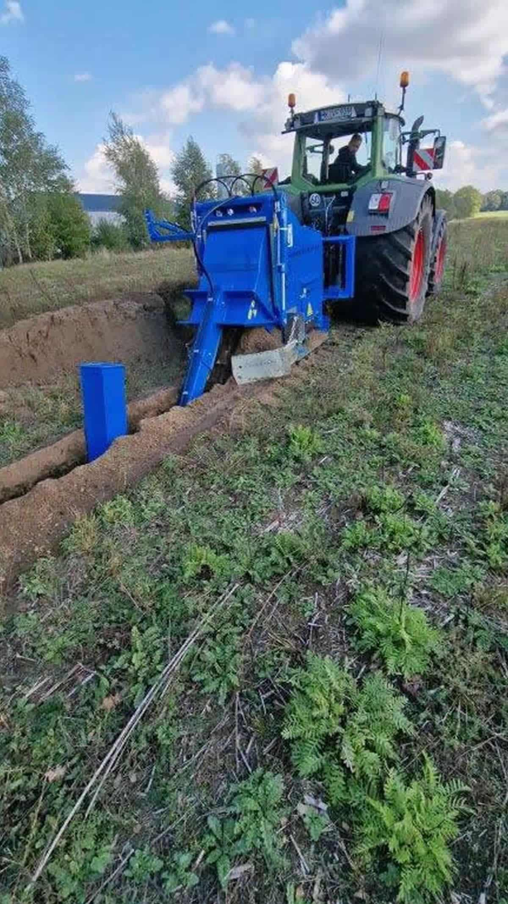

Seit 1969 zuhause im Emsland.
Weltweit unter Tage.
LIBA – Lingener Baumaschinen ist ein inhabergeführtes Unternehmen aus Lingen (Ems). Wir konstruieren und fertigen Grabenfräsen, die in über 60 Ländern für Glasfaser-, Energie-, Versorgungs- und Tiefbauprojekte im Einsatz sind.
Eine Idee.
Eine Werkbank.
Fünf Jahrzehnte Maschinenbau.
Was 1969 als Reparatur- und Konstruktionswerkstatt in Lingen begann, hat sich zu einer der spezialisiertesten Maschinenmanufakturen im europäischen Grabenfräsenbau entwickelt.
Heute fertigt LIBA in eigenem Hause Konstruktion, Schweißbau, Hydraulik-Integration und Endmontage — unter einem Dach, mit derselben Familie an der Spitze. Unsere Maschinen sind kein Konsumgut. Sie sind über Jahrzehnte einsatzfähige Arbeitsgeräte — und genau das ist Anspruch an jeden Meter Schweißnaht, jeden Schlauch, jedes Lager, das unser Werk verlässt.

Werk Lingen (Ems)Vier Prinzipien.
Eine Marke.
Was unsere Maschinen ausmacht, lässt sich nicht in Datenblättern allein ablesen. Es ist eine Haltung — präzise, robust, zuverlässig.
Robustheit
Konstruktion auf Lebenszeit. Jeder Rahmen aus dem LIBA-Werk hält Jahrzehnte unter realen Baubedingungen.
Präzision
Reproduzierbare Grabengeometrien — der Unterschied zwischen Vortrieb und Improvisation.
Innovation
Neue Werkzeugbestückungen, neue Trägerkonzepte — wir entwickeln das, was die Trasse von morgen braucht.
Verlässlichkeit
Direkter Werkskontakt, Ersatzteile aus dem eigenen Lager, persönliche Ansprechpartner — keine Hotline-Kette.
Lingen (Ems) — wo wir die Maschinen bauen, die anderswo den Boden öffnen.